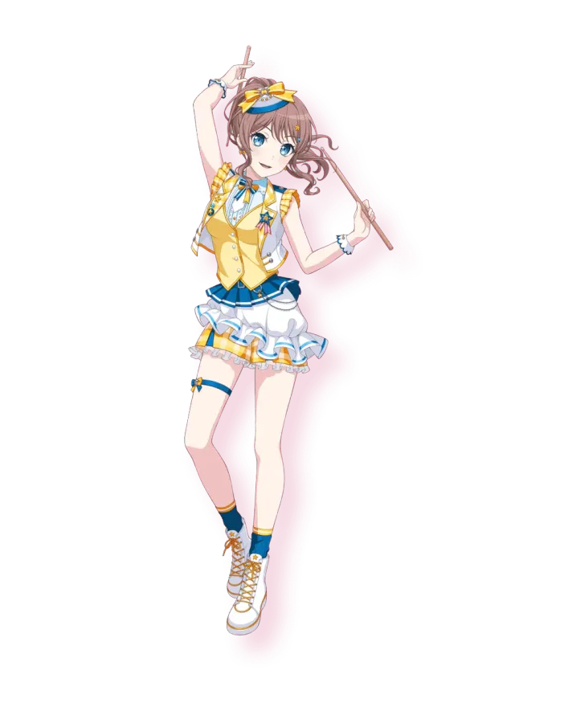

※ 머신러닝 라이브러리를 불러오므로 약 10~20초 소요됩니다.
질문자님이 요청하신 "외우는 템플릿 4종류 모두"입니다! 시험장에서 제2유형 문제를 보자마자 ① 분류(확률)인지 ② 분류(라벨)인지 ③ 일반 회귀인지 ④ 비대칭 회귀인지만 파악하고 아래 4개 중 하나를 그대로 타이핑하면 10분 만에 만점을 받을 수 있습니다.
💡 백지 연습장입니다! 왼쪽의 템플릿을 보면서 오른쪽 에디터에 직접 따라 쳐보세요!
import pandas as pd
from sklearn.model_selection import train_test_split
from sklearn.ensemble import RandomForestClassifier
from sklearn.metrics import roc_auc_score
train = pd.read_csv("train.csv")
test = pd.read_csv("test.csv")
target_col = "이탈"
id_col = "고객ID"
X = train.drop(columns=[id_col, target_col])
y = train[target_col]
X_test = test.drop(columns=[id_col])
num_cols = X.select_dtypes(include="number").columns
cat_cols = X.select_dtypes(exclude="number").columns
medians = X[num_cols].median()
X[num_cols] = X[num_cols].fillna(medians)
X_test[num_cols] = X_test[num_cols].fillna(medians)
X[cat_cols] = X[cat_cols].fillna("unknown")
X_test[cat_cols] = X_test[cat_cols].fillna("unknown")
X = pd.get_dummies(X)
X_test = pd.get_dummies(X_test).reindex(columns=X.columns, fill_value=0)
x_tr, x_va, y_tr, y_va = train_test_split(X, y, test_size=0.2, random_state=42, stratify=y)
model = RandomForestClassifier(n_estimators=200, random_state=42)
model.fit(x_tr, y_tr)
val_proba = model.predict_proba(x_va)[:, 1]
print("자체 검증 ROC AUC:", round(roc_auc_score(y_va, val_proba), 4))
pred_proba = model.predict_proba(X_test)[:, 1]
pd.DataFrame({"pred": pred_proba}).to_csv("result.csv", index=False)
print("성공! 파일 저장 완료")
import pandas as pd
from sklearn.model_selection import train_test_split
from sklearn.ensemble import RandomForestClassifier
from sklearn.metrics import f1_score
train = pd.read_csv("train.csv")
test = pd.read_csv("test.csv")
target_col = "이탈"
id_col = "고객ID"
X = train.drop(columns=[id_col, target_col])
y = train[target_col]
X_test = test.drop(columns=[id_col])
num_cols = X.select_dtypes(include="number").columns
cat_cols = X.select_dtypes(exclude="number").columns
medians = X[num_cols].median()
X[num_cols] = X[num_cols].fillna(medians)
X_test[num_cols] = X_test[num_cols].fillna(medians)
X[cat_cols] = X[cat_cols].fillna("unknown")
X_test[cat_cols] = X_test[cat_cols].fillna("unknown")
X = pd.get_dummies(X)
X_test = pd.get_dummies(X_test).reindex(columns=X.columns, fill_value=0)
x_tr, x_va, y_tr, y_va = train_test_split(X, y, test_size=0.2, random_state=42, stratify=y)
model = RandomForestClassifier(n_estimators=200, random_state=42)
model.fit(x_tr, y_tr)
val_pred = model.predict(x_va)
print("자체 검증 Macro F1:", round(f1_score(y_va, val_pred, average="macro"), 4))
pred_label = model.predict(X_test)
pd.DataFrame({"pred": pred_label}).to_csv("result.csv", index=False)
print("성공! 파일 저장 완료")
import pandas as pd
from sklearn.model_selection import train_test_split
from sklearn.ensemble import RandomForestRegressor
from sklearn.metrics import mean_squared_error
train = pd.read_csv("train.csv")
test = pd.read_csv("test.csv")
X = train.drop(columns=["총구매액", "고객ID"])
y = train["총구매액"]
X_full = pd.concat([X, test.drop(columns=["고객ID"])], axis=0)
num_cols = X_full.select_dtypes(include="number").columns
X_full[num_cols] = X_full[num_cols].fillna(0)
X_full = pd.get_dummies(X_full)
X_train_full = X_full[:len(train)]
X_test = X_full[len(train):]
# 🚨 회귀이므로 stratify 절대 금지!
x_tr, x_va, y_tr, y_va = train_test_split(X_train_full, y, test_size=0.2, random_state=42)
model = RandomForestRegressor(n_estimators=200, random_state=42)
model.fit(x_tr, y_tr)
val_pred = model.predict(x_va)
rmse = mean_squared_error(y_va, val_pred, squared=False)
print("검증 RMSE:", round(rmse, 4))
pred = model.predict(X_test)
pd.DataFrame({"pred": pred}).to_csv("result.csv", index=False)
print("성공! 파일 저장 완료")

import numpy as np
import pandas as pd
from sklearn.model_selection import train_test_split
from sklearn.ensemble import RandomForestRegressor
from sklearn.metrics import mean_squared_log_error
train = pd.read_csv("train.csv")
test = pd.read_csv("test.csv")
X = train.drop(columns=["총구매액", "고객ID"])
y = train["총구매액"]
X_full = pd.concat([X, test.drop(columns=["고객ID"])], axis=0)
num_cols = X_full.select_dtypes(include="number").columns
X_full[num_cols] = X_full[num_cols].fillna(0)
X_full = pd.get_dummies(X_full)
X_train_full = X_full[:len(train)]
X_test = X_full[len(train):]
x_tr, x_va, y_tr, y_va = train_test_split(X_train_full, y, test_size=0.2, random_state=42)
model = RandomForestRegressor(n_estimators=200, random_state=42)
model.fit(x_tr, np.log1p(y_tr))
val_pred = np.clip(np.expm1(model.predict(x_va)), 0, None)
rmsle = np.sqrt(mean_squared_log_error(y_va, val_pred))
print("검증 RMSLE:", round(rmsle, 4))
pred = np.clip(np.expm1(model.predict(X_test)), 0, None)
pd.DataFrame({"pred": pred}).to_csv("result.csv", index=False)
print("성공! 파일 저장 완료")